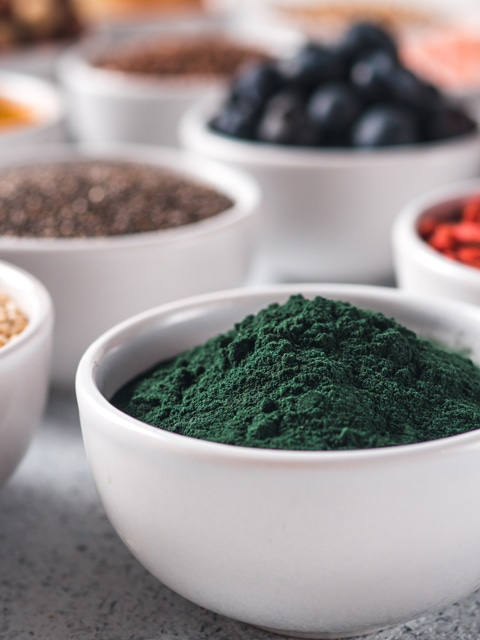

<!doctype html><html lang="en"><meta charset="utf-8"><meta name="viewport" content="width=device-width,initial-scale=1"><title>How To Tackle a Recipe (3 lessons) Archives</title><link rel="stylesheet" href="../reader.css"><header><a href="../START_HERE.html">← Каталог и поиск</a> · <a href="https://nouveauraw.com/reference-library/how-to-tackle-a-recipe/">Оригинал</a> · Личная копия, 10.09.2026 · © Amie Sue</header><main><div id="post-4496" class="post-4496 post type-post status-publish format-standard has-post-thumbnail hentry category-how-to-tackle-a-recipe" data-source-url="https://nouveauraw.com/reference-library/how-to-tackle-a-recipe/">

  

<div class="grid_1">

	<div class="image-wrap fader">
    <span class="category">  </span> 
        <!-- removed title overlay -->
	<a href="reference-library-how-to-tackle-a-recipe-how-to-read-and-tackle-a-recipe-2655b59683.html" title="go to How to Read and Tackle a Recipe"><span></span></a>
	</div>
         <!-- title below thumbnail -->
<div class="nr_title"><a href="reference-library-how-to-tackle-a-recipe-how-to-read-and-tackle-a-recipe-2655b59683.html" title="go to How to Read and Tackle a Recipe">How to Read and Tackle a Recipe</a></div>

		
	
</div><!-- .grid -->


  

<div class="grid_1">

	<div class="image-wrap fader">
    <span class="category"><a href="reference-library-how-to-tackle-a-recipe-mise-en-place-everything-ready-4fb7a8f2f1.html"> </a> </span> 
        <!-- removed title overlay -->
	<a href="reference-library-how-to-tackle-a-recipe-mise-en-place-everything-ready-4fb7a8f2f1.html" title="go to Mise en Place (everything ready)"><span></span></a>
	</div>
         <!-- title below thumbnail -->
<div class="nr_title"><a href="reference-library-how-to-tackle-a-recipe-mise-en-place-everything-ready-4fb7a8f2f1.html" title="go to Mise en Place (everything ready)">Mise en Place (everything ready)</a></div>

		
	
</div><!-- .grid -->


  

<div class="grid_1">

	<div class="image-wrap fader last">
    <span class="category">  </span> 
        <!-- removed title overlay -->
	<a href="reference-library-recipe-templates-the-value-of-tasting-as-you-go-95843e2dbd.html" title="go to The Value of Tasting as You Go"><span></span></a>
	</div>
         <!-- title below thumbnail -->
<div class="nr_title"><a href="reference-library-recipe-templates-the-value-of-tasting-as-you-go-95843e2dbd.html" title="go to The Value of Tasting as You Go">The Value of Tasting as You Go</a></div>

		
	
</div><!-- .grid -->


	<div class="nav-interior clearfix">
			<div class="prev"></div>
			<div class="next"></div>
	</div>

	
</div></main></html>